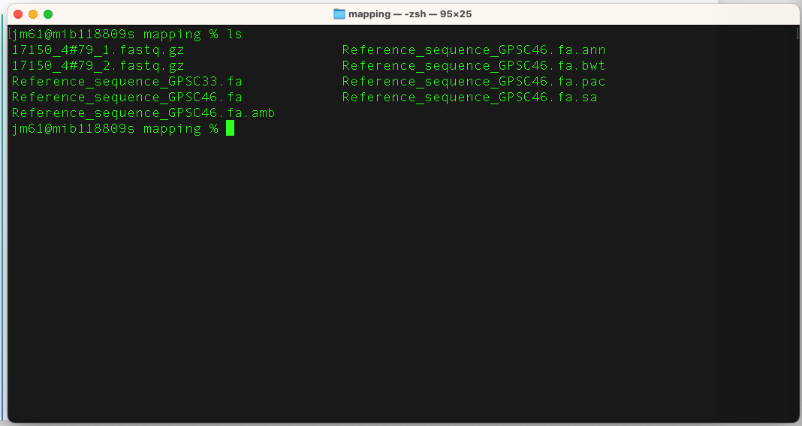
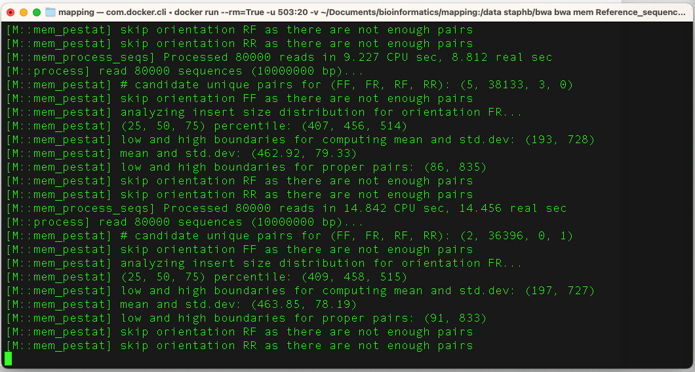
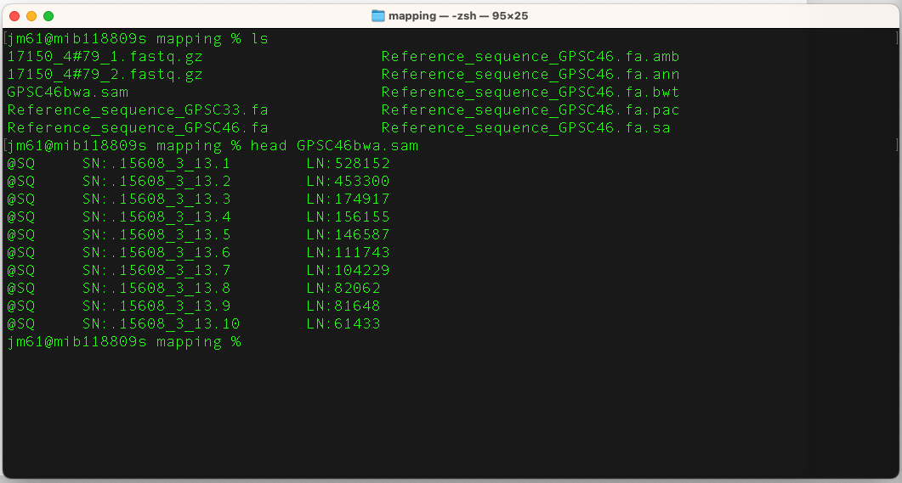
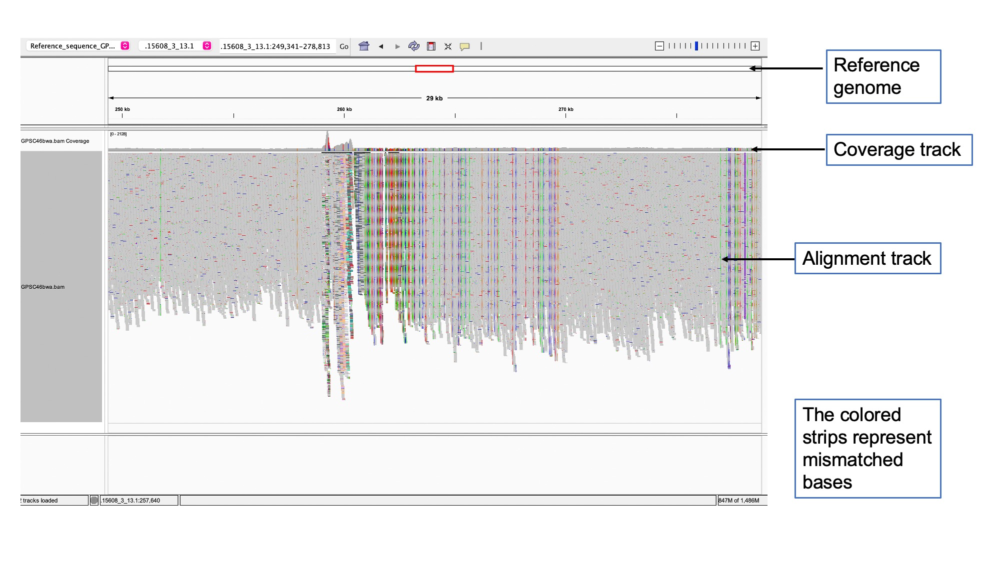

Before you being this section, navigate to the mapping folder. You will use this folder and its contents to learn and practice this section.
Overview
Mapping short reads against a reference genome is typically the first step to analyze such next-generation sequencing data, and it should be as accurate as possible. Because of the high number of reads to handle, numerous sophisticated algorithms have been developed to tackle this problem and many mapping tools exist now.
Further reading: Mapping Reads on a Genomic Sequence: An Algorithmic Overview and a Practical Comparative Analysis
Selecting a reference sequence for mapping
A single reference genome is designated to represent a species for comparative analysis. A complete reference genome should be of high quality annotation and meets the highest level of experimental support for structural and functional annotation.
Further reading: RefSeq microbial genomes database: new representation and annotation strategy
Note: It is important to have in mind that although a single arbitrary reference genome is a frequently used approach in microbial genomics, the choice of a reference may represent a source of errors that may affect subsequent analyses such as the detection of single nucleotide polymorphisms (SNPs) and phylogenetic inference.
Further reading: One is not enough: On the effects of reference genome for the mapping and subsequent analyses of short-reads
Tool(s)
There are many tools available to align reads onto a reference sequence: tanoti, bwa, bowtie2, stampy, GEM,bbMap, novoalign, to name but a few. For this section, we will be using bwa (Burrows-Wheeler Aligner) and samtools. You can download them from a docker repository using the commands:
docker pull staphb/bwa
docker pull staphb/samtools
Assessing files
Explore files in the mapping folder. You should see the compressed FASTQ paired end read files (17150_4#79_1.fastq.gz and 17150_4#79_2.fastq.gz) and also two FASTA reference sequence files (Reference_sequence_GPSC46.fa and Reference_sequence_GPSC33.fa).
We will be aligning the paired end reads to the two reference sequences in turn. The reference sequences represent the GPSC33 and GPSC46 lineages of Streptococcus pneumoniae, and we will use the alignment results to determine which lineage the reads belong to.
Further reading: International genomic definition of pneumococcal lineages, to contextualise disease, antibiotic resistance and vaccine impact
As a quick check, count the number of lines in each of the read files and check they have the same number. As these are paired end reads, there should be one read from each read pair in each of the files - and hence the same number of lines (and therefore reads) in each file.
gzip -cdf 17150_4#79_1.fastq.gz | wc -l
gzip -cdf 17150_4#79_2.fastq.gz | wc -l
An explanation of these commands are as follows:
gzip: Command to compress or uncompress files
cdf: Options where c means writing file on standard output, keeping the original files unchanged; d means decompress (to .fastq); and f means forcing overwrite of output files and use of symbolic links. (Here, fastq.gz files are symbolic links)
| : Pipes the output .fastq file to the next command
wc: Command for a program called word count, by providing the -l flag we tell word count to count the number of lines in a file.
Quiz
How many lines are in the read files 1 and 2? Are they the same?
How many READS are in the read file 1 and 2?
Hint: Think about how many lines represent a single read in the FASTQ format
Paired read files should always have the same number of lines/reads (the ordering of the reads in each file is also critical), so if your two paired files have a different number of lines, something has gone wrong (e.g., filtering/trimming went wrong and corrupted the output, or maybe files from different samples are being used).
Creating an alignment
We will first create an index of the reference sequence file “Reference_sequence_GPSC46.fa”. For large references, this can take a while but once the index is created you can re-use it for multiple samples. For example, if you have 100 Streptococcus pneumoniae samples, you only need to create the index once and you can use it for all 100 samples.
Run the command in terminal to execute bwa:
docker_run staphb/bwa bwa index Reference_sequence_GPSC46.fa
An explanation of these commands are as follows:
docker_run: is a function to start a container. The function includes the following flags: docker run --rm=True -u $(id -u):$(id -g) -v $(pwd):/data "$@". To understand the docker_run function read the section [Data, Tools and Computational Platforms (Docker)]
staphb/bwa: is the docker image
bwa: is the tool
index: instructs bwa to index the input file
Reference_sequence_GPSC46.fa: is the input file
If you list ls the content of the directory, you should now see the
bwa index files, they will have the prefix “Reference_sequence_GPSC46.fa” and will have extensions such as
.amb, .ann, .bwt, .pac, and .sa.

To align the reads to the reference sequence, type this command in terminal:
docker_run staphb/bwa bwa mem Reference_sequence_GPSC46.fa 17150_4#79_1.fastq.gz
17150_4#79_2.fastq.gz > GPSC46bwa.sam
An explanation of these commands are as follows:
docker_run: is a function to start a container. The function includes the following flags: docker run --rm=True -u $(id -u):$(id -g) -v $(pwd):/data "$@". To understand the docker_run function read the section [Data, Tools and Computational Platforms (Docker)]
staphb/bwa: is the docker image
bwa: is the tool
mem: tells bwa to use the mem algorithm to align the read files to the reference
17150_4#79_1.fastq.gz: input file of forward reads
17150_4#79_2.fastq.gz: input file of reverse reads
Reference_sequence_GPSC46.fa: is the input file
> GPSC46bwa.sam: direct (>) the alignment results into the file GPSC46bwa.sam
When bwa runs, it will print messages to your terminal screen.

When bwa is finished, check that the SAM file has been created using
ls
There should now be a file GPSC46bwa.sam in the directory. Typically, a SAM file contains a single line for each read in the data set, and this line stores the alignment results of each read (reference name, alignment location, CIGAR string, the read sequence itself, quality etc..)
SAM files are in text format. To view it, type:
head GPSC46bwa.sam
You will have the following output:

Note: This can take up a lot of disk space. It is good practice to convert your SAM files to BAM files (Binary Alignment Map), which are compressed binary versions of the same data, and can be sorted and indexed easily to make searches faster. We will use samtools to convert our SAM to BAM, and sort and index the BAM file.
To convert a sam file to a bam file, type this command in terminal:
docker_run staphb/samtools samtools sort GPSC46bwa.sam -o GPSC46bwa.bam
An explanation of these commands are as follows:
docker_run: is a function to start a container. The function includes the following flags: docker run --rm=True -u $(id -u):$(id -g) -v $(pwd):/data "$@". To understand the docker_run function read the section [Data, Tools and Computational Platforms (Docker)]
staphb/samtools: is the docker image
samtools: is the tool
sort: tells samtools to sort the SAM file (GPSC46bwa.sam)
GPSC46bwa.sam: input file
-o GPSC46bwa.bam: flag for the output file called GPSC46bwa.bam which is the sorted data in the BAM format
The next step is to index the BAM file; indexing, which relies on sorted data, enables faster searches downstream. Type this command in terminal:
docker_run staphb/samtools samtools index GPSC46bwa.bam
An explanation of these commands are as follows:
docker_run: is a function to start a container. The function includes the following flags: docker run --rm=True -u $(id -u):$(id -g) -v $(pwd):/data "$@". To understand the docker_run function read the section [Data, Tools and Computational Platforms (Docker)]
staphb/samtools: is the docker image
samtools: is the tool
index: instructs samtools to index the input file (GPSC46bwa.bam)
GPSC46bwa.bam: input file
There should now be two new files called: GPSC46bwa.bam and
GPSC46bwa.bam.bai (the BAM index file) in the directory. Now lets list ls -alh
the content of the directory to check we have our new files, and also check out their sizes.
Quiz
How big is the SAM file compared to the BAM file?
Note: If your SAM file is 0B (i.e., 0 bytes) then something went wrong with the bwa alignment step, so restart from there. If your SAM file is fine (i.e., >0), but your BAM file is 0B (i.e., empty), then something went wrong with your SAM to BAM conversion so re-do that section.
We do not need our original SAM file anymore (as we have the BAM file now). So we
remove rm the SAM file GPSC46bwa.sam.
Assessing the alignment
Samtools is one of the key pieces of software in analyses involving High Throughput Sequencing (HTS) data. It has a wide range of functions and combines easily with related tools such as vcftools (for calling variants). One common thing to check is how many reads have aligned to the reference (mapped), and how many did not (unmapped). Samtools can report this for us easily, utilising the aligner SAM flags you learnt in section 2 (NGS file formats).
The 2nd column in the SAM file contains the flag for the read alignment. If the flag includes the number 4 flag in its makeup then the read is unmapped, if it doesn't include the number 4 then it is mapped.
Number of mapped read alignments
docker_run staphb/samtools samtools view -c -F4 GPSC46bwa.bam
An explanation of these commands are as follows:
samtools view: to view the file bwa.bam
-c: count the read alignment
-F4: skip read alignment that have the unmapped Flag 4
Number of unmapped reads
docker_run staphb/samtools samtools view -c -f4 GPSC46bwa.bam
This time we use -f4, which only include read alignment that do have the unmapped flag 4
Quiz
How many reads are mapped to the Reference_sequence_GPSC46.fa genome?
How many reads are unmapped?
Technically, the above command gives the number of mapped read alignment not reads. A read could be mapped equally well to multiple positions (one will be called the primary alignment, and others secondary alignment [sam flag 256], or a read could be split into two parts (e.g., splicing) with one part being the primary alignment and the others supplementary [sam flag 2048].
So to get the true number of mapped reads you need to count the alignment that do not have flags 4 (unmapped), 256 (not primary), and 2048 (supplementary) = 4+256+2048 = 2308.
Number of mapped read reads
docker_run staphb/samtools samtools view -c -F2308 GPSC46bwa.bam
docker_run staphb/samtools samtools view -c -F4 -F256 -F2048 GPSC46bwa.bam
Statistics
You can generate the statistics of mapping using the command
docker_run staphb/samtools samtools stats GPSC46bwa.bam > GPSC46bwa_bamstats.txt
Open the "GPSC46bwa_bamstats.txt" file to view the statistics for all the reads
View mapped reads in IGV
You will require the following files to view mapped reads in IGV:
- Reference sequence that you used to map your reads
- Sorted and indexed mapped read BAM file
Launch IGV using methods outlines in Data, tools and computational platforms (Bioinformatics Tools).
Load the reference sequence: In the toolbar, Click Genome > Load Genome from file > Search and select Reference_sequence_GPSC46.fa
Load the BAM file: Go to File > Load from file > Select GPSC46bwa.bam

And you are now free to investigate different areas and the alignments in the genome.
Practice exercise
You now need to use bwa to align the reads to the Reference_sequence_GPSC33.fa. Later in the visualisation and summary statistics section, we will be comparing the “Reference_sequence_GPSC46.fa” and “Reference_sequence_GPSC33.fa” alignment results.
You need to work out the commands yourself based on the previous commands for “Reference_sequence_GPSC46.fa”
But first, let’s make a backup of our GPSC46 files in case anything goes wrong and they get overwritten, by copying them:
cp GPSC46bwa.bam backup_GPSC46bwa.bam
cp GPSC46bwa.bam.bai
backup_GPSC46bwa.bam.bai
Here is a reminder of the commands you used for “Reference_sequence_GPSC46.fa” which you will need to adapt.
Note: Essentially, you will want to change the reference name in the bwa command, and all of the SAM/BAM filenames in the bwa and samtools commands from GPSC46 to GPSC33.
docker_run staphb/bwa bwa index
Reference_sequence_GPSC46.fa
docker_run staphb/bwa bwa mem
Reference_sequence_GPSC46.fa 17150_4#79_1.fastq 17150_4#79_2.fastq > GPSC46bwa.sam
docker_run staphb/samtools samtools sort GPSC46bwa.sam -o
GPSC46bwa.bam
docker_run staphb/samtools samtools index
GPSC46bwa.bam
rm GPSC46bwa.sam
docker_run staphb/samtools samtools view -c -F4
GPSC46bwa.bam
docker_run staphb/samtools samtools view -c -f4
GPSC46bwa.bam
Quiz
How many reads are mapped to the “Reference_sequence_GPSC33.fa” genome?
How many reads are unmapped?
Which reference assembly has the most mapped reads: “Reference_sequence_GPSC46.fa” or “Reference_sequence_GPSC33.fa”?
Therefore, which reference sequence is better (“Reference_sequence_GPSC46.fa” or “Reference_sequence_GPSC33.fa”)?